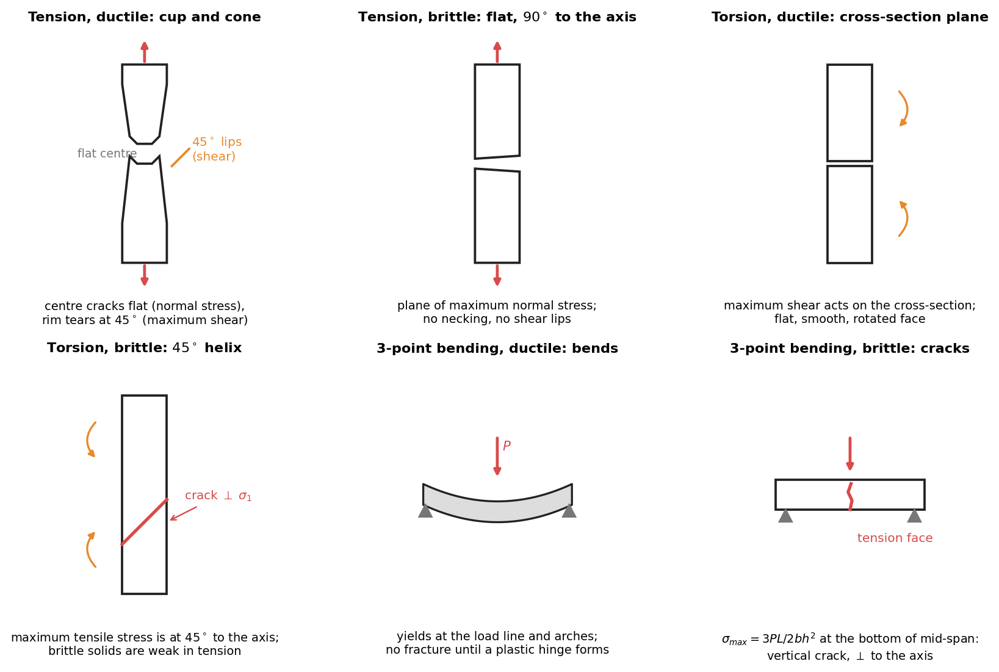

Strength of Materials · Transformation of Stress and Strain · 5 min read
Failure Planes — Ductile and Brittle Fracture
A material breaks on the plane where its weakest property is first exhausted. Ductile metals are weakest in shear, so they fail on planes of maximum shear stress. Brittle solids are weakest in tension, so they fail on the plane of maximum normal stress. Mohr's circle tells you where both planes are for any loading; the experiment tells you which one the material picks.
Part of Strength of Materials - MOC · tools: Mohr's Circle for Stress, Plane Stress Transformation · formulas: Strength of Materials - Formula Bank (§7) · lab context: Applied Mechanics Lab - MOC
1. Where the two planes are
For a point with principal stresses :
| Plane | Where | Stress on it |
|---|---|---|
| Plane of maximum normal stress | principal plane of | , no shear |
| Planes of maximum shear | from the principal planes | (with the third principal stress included if it is larger) |
The criteria in the formula bank are these two ideas: maximum normal stress (Rankine) for brittle materials, Tresca and von Mises for ductile ones.
2. The loadings, one by one

Figure: the six standard cases. Red marks the crack or fracture plane; orange marks the shear direction.
| Loading | State of stress | Ductile (mild steel, aluminium) | Brittle (cast iron, glass, chalk) |
|---|---|---|---|
| Axial tension | , on planes | cup and cone: necks, the core cracks flat, the rim tears on lips (shear) | flat fracture normal to the axis (), no neck |
| Axial compression | , at | squashes and barrels (flows sideways), no fracture | shear fracture on an oblique plane (about or steeper, friction), or axial splitting |
| Torsion | pure shear : at | shears on the cross-section (flat, perpendicular to the axis, smooth) | helix, normal to the tensile principal stress |
| Three-point bending | stress is at the bottom of the mid-span; uniaxial there | bends and yields at the load line; no fracture until a plastic hinge forms and the specimen folds | crack starts at the tension face under the load, runs vertically toward the load ( to the axis) |
| Short deep beam in bending | shear dominates near the supports | web yields in shear | diagonal cracks near the supports (shear-tension) |
3. Why each one happens
Tension, ductile. Slip begins on planes where is greatest, so yield is (Tresca). Plastic flow localises into a neck, which raises the triaxial tension in the middle: microvoids open and coalesce into a flat crack (the cup bottom), and the final rim tears along the shear planes (the cone).
Tension, brittle. Cleavage and microcracks open under before any slip. The crack runs on the plane normal to , which is the cross-section. Nothing absorbs energy beforehand, so the fracture surface is flat and the strain at failure is small (cast iron ).
Torsion. Pure shear is also tension and compression at . The two weaknesses are separated cleanly. A ductile shaft is weaker in shear than in tension, so it shears on the transverse plane (and, in wood, along the grain, because the complementary shear on the axial plane is the same size and wood is weak in shear along the fibres). A brittle shaft cracks where the tension is: a helix. A piece of chalk twisted in the hands shows it.
Bending. The beam is a column of fibres in tension below the neutral axis and compression above. The bottom fibre at mid-span carries the highest tension. A ductile beam yields from the outside inwards and deflects, never separating in the test (hence the "no fracture" result and the large permanent set). A brittle beam fails at with a sudden crack from the tension face. The flexural strength of a brittle material is called the modulus of rupture.
Compression, brittle. Brittle materials are – times stronger in compression. Internal friction tilts the fracture plane from to about with the axis (concrete cylinders, cast iron), or the specimen splits along the load axis if the end faces are lubricated.
4. Applications and checks
- Reading a broken specimen. Flat and square to the axis in tension: brittle. Cup and cone: ductile. A helix in a shaft: brittle, and the shaft was loaded in torsion. A smooth transverse face with rotated edges: ductile torsion.
- Direction of a fatigue crack. It grows perpendicular to the maximum principal tensile stress, so a shaft in torsion fatigues on a helix even if it is steel.
- Design. Use von Mises or Tresca for ductile members, maximum normal stress for cast iron and ceramics, and compare the cast-iron allowables in tension and compression separately (see the T-section question in Question Bank 2 - Beams, Bending and Shear).
- Strain-gauge placement. On a torsion specimen the gauges go at to the axis because the principal strains are there.
Predict first: a cylinder of chalk is loaded in torsion. Along which surface does it break?
Along a helix at to the axis, normal to the tensile principal stress; chalk is weak in tension. A steel bar of the same shape would shear on the cross-section.
Why does cast iron fail in a flat fracture in tension but at an angle in compression?
In tension the plane of maximum normal stress (the cross-section) is the weak plane: cleavage is the easiest mode. In compression the tensile stresses are small, and the weakest mode is shear, helped by internal friction, so the fracture plane lies at roughly and is not the plane of maximum shear exactly (friction tilts it).
Mild steel bar tested in 3-point bending does not break. Is this a "failure"?
Not by fracture. By the engineering definition (loss of function) it has failed when it yields at the load line and the deflection is permanent. The test is stopped at a limit deflection and the result reported as a yield load, or the specimen is folded to check ductility (a bend test).
Cross-domain links
- Shear versus tension weakness shows up again in Materials and Design - MOC (failure theories, fracture mechanics: crack planes normal to in mode I).
- The helix in torsion is the same geometry as the principal strain axes on a rosette: Strain Transformation and Rosettes.
- Failure in the lab: Lab - Tensile Test of Mild Steel with DIC (cup-and-cone surface) and Lab - Torsion of Circular Shafts.